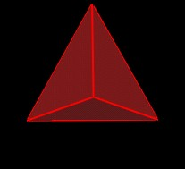

The "dual" of a polyhedron can be obtained by replacing all the faces of the polyhedron by new vertices and then connecting all the new vertices together.
For example, consider the cube.
Put a green sphere in the center of each face.
Now connect all the green spheres together.
This defines the Octahedron, the dual of the cube.
We can scale (grow) the Octahedron until its edges intersect the edges of the cube. (This is not part of defining a "dual". Its just a nice scale to work with.)
We consider here only the Platonic "solid" polyhedra. These are shown in the following table.
|  | |
| Tetrahedron | Tetrahedron |
| Cube | Octahedron |
|
|
|
| Regular Dodecahedron | Icosahedron |
The Tetrahedron is listed twice because the dual of the Tetrahedron is another Tetrahedron.
For these Platonic solids (Tetrahedron, Cube, Octahedron, Icosahedron, Dodecahedron) there is another way to obtain the dual polyhedron.
If we rotate the edges of the polyhedron by 90 degrees (and possibly adjust the edge lengths) we get the daul polyhedron.
| (Alternative Animation Mode) | (Alternative Animation Mode) | (Alternative Animation Mode) |
For the Tetrahedron case above, the edge lengths are not changed during rotation.
However, for the cube case, the edges of the cube need to grow by a factor of sqrt(2), which is approximately 1.414..., to form the edges of the Octahedron.
| (Alternative Animation Mode) | (Alternative Animation Mode) | (Alternative Animation Mode) |
And for the case of the regular Dodecahedron, the edges need to grow by a factor of the Golden Mean, which is
to form the edges of the Icosahedron.
| (Alternative Animation Mode) | (Alternative Animation Mode) | (Alternative Animation Mode) |
Now we'll look at another type of dynamic relation between the dual pairs.
This motion and modeling was originally discovered by Ron Resch in about 1960 and documented in his film "The Ron Resch Paper and Stick Film", which is a document of his thesis work at University of Iowa.
This dynamic will only work for the (Cube, Octahedron) and (Dodecahedron, Icosahedron) pairs. It will not work for the (Tetrahedron, Tetrahedron) pair.
Consider again the Cube and the Octahedron.
We will erase all the green edges of the Octahedron...
and begin connecting the Octahedron vertices to the Cube vertices.
We connect an Octahedron vertex to the furthest away Cube vertex. There are 4 "furthest away" cube vertices for every Octahedron vertex.
Here, all the Octahedron vertices are connected to the Cube vertices.
And, we erase the Cube's pink edges.
The reason for doing this is that we now have a dynamic model.
We can push in on the green Octahedron vertices to shrink the Octahedron. This expands the Cube.
Or we can push in on the Cube vertices to shrink the Cube. This expands the Octahedron.
| (Alternative Animation Mode) | (Alternative Animation Mode) |
Note that this expansion and contraction occurs without the orange struts changing length.
Dispite the fact that in these figures the orange struts intersect and pass through each other (which no strut in any physical (real) model would be able to do) a real model of this dual pair configuration and dynamics can be built. The struts weave by each other. I have built several of these models with 1/8 inch diameter wood sticks and elastic bands. It does work.
From a more philosophical point of view, the dynamics here is another example of the complementary nature of Nature and of expansion and contraction in particular. As one system contracts, the dual system is expanding.
Often in Nature, you are able to see the expansion of one system, but the complementary contraction of the complementary system is not visible.
However, the expansion and contraction are always there.
Remember, for something to expand, it must expand into the environment, which contracts the environment.
Often the environment into which a system is expanding is so large as to be unobvious by human standards of evevryday perception.
Here are similar animations for the Dodecahedron/Icosahedron dual pair.
| (Alternative Animation Mode) | (Alternative Animation Mode) |
Again, the orange struts are not changing their lengths.
Click here to read about a connection between the Cube/Octahedron dual pair and Lynnlcaire Dennis' Pattern Knot.
Usage Note: My work is copyrighted. You may use my work but you may not include my work, or parts of it, in any for-profit project without my consent.